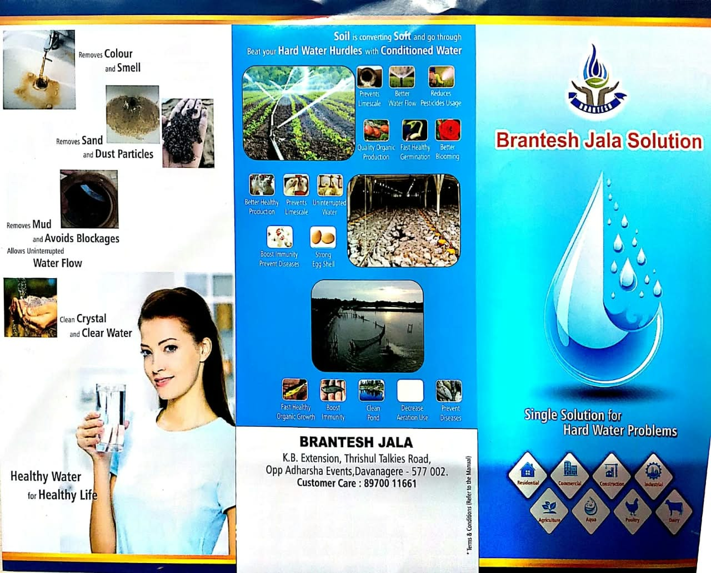

01
RO Plant
Reverse-osmosis solutions for commercial and industrial water purification requirements.
- Water purification
- Commercial applications
- Industrial applications
Integrated water treatment and conditioning solutions for homes, agriculture, commercial facilities and industry — built around quality, service and practical innovation.
Explore treatment, conditioning, filtration and wastewater solutions arranged around the way water moves through real applications — from source to recovery and reuse.
Reverse-osmosis solutions for commercial and industrial water purification requirements.
Wastewater treatment solutions for responsible treatment, reuse and efficient water management.
Advanced wastewater-management solutions focused on water recovery and minimal liquid discharge.
Natural water conditioning and hard-water management focused on scale control, cleaner plumbing and improved water flow.
Filtration systems for suspended solids, odour, taste, colour and selected contaminants.
Application-focused treatment and conditioning approaches for process water, filtration and water-quality requirements.
The supplied presentation describes CDLPT / natural water conditioning and research into hard-water sediment formation.
The company presentation describes research into water softeners, magnetic and electromagnetic softeners, and CDLPT — Calcium Debonding Low Power Technologies.
Presented as a low-power approach to physical water conditioning for hard-water applications.
Designed around the problem of hard-water scaling in plumbing, water heaters, irrigation and related systems.
Supplied specifications include manual and automatic filter configurations up to 6,000 L/hr for sand filtration and up to 3,000 L/hr for carbon filtration.
Water conditioning and treatment applications across residential, commercial, industrial, agriculture, dairy, poultry and aqua environments.
 01
01Home water conditioning and installed softener applications.
 02
02Water treatment, filtration and conditioning for industrial environments.
 03
03Irrigation, soil and crop-support water applications.
 04
04Water-quality applications for dairy and animal-farming environments.
 05
05Water-conditioning applications for aquaculture and aqua environments.
 06
06Building, facility and commercial water-system applications.
The company material highlights scale control, cleaner plumbing, reduced maintenance, uninterrupted water flow and application-specific benefits across water-dependent environments.
Brantesh Jala Solution Technologies was founded on 21 August 2017 in Davangere, Karnataka. The supplied company profile describes a focus on developing new technologies and innovations to make people’s lives easier.
Mr. Chandrakanta G.G. is identified in the company material as the founder and innovator behind its natural water softener research, including CDLPT (Calcium Debonding Low Power Technologies).

Founded in Davangere in 2017, Brantesh Jala Solution Technologies presents a water-focused approach built around research, conditioning, filtration and practical service.
Share your application, water source and requirement. Our team can discuss the most suitable treatment or conditioning approach.